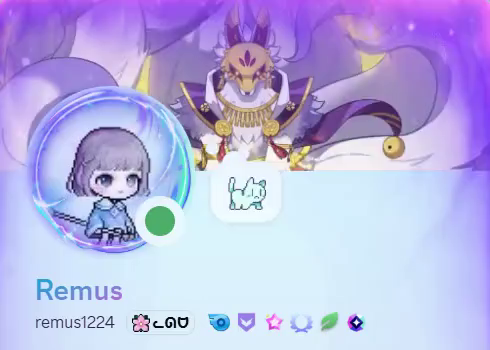
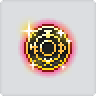

- 新增創世解放、創世鍊成與創世鍊成石計算功能。
- 提醒數據來源尚未於遊戲內正式驗證，實際請以遊戲內顯示為主。
楓之谷M 也許有用的工具
資料備份與還原
備份已儲存的計算機輸入，換裝置或清除瀏覽器前都能保留。

Bug 告知
如果有發現什麼 Bug 可以加我的 Discord
紙條：露娜-迷你安安
（留言 Discord 名稱我方便確認好友）
創世解放計算機上線
新增創世解放、創世鍊成與創世鍊成石三個獨立進度計算分頁。
CHANGELOG
更新時間軸
-
最新 -
- 新增混沌製作航海師。
-
- 更新加入正式製作成功／失敗特效。
-
- 新增符文計算機、極限屬性計算機。
- 更新調整製作模擬器有跟沒有一樣的獎勵機率系統，紋章模擬器加入優質盤子混沌紋章。
- 保存計算機支援自動記錄，並加入資料匯出、匯入與清除功能。
- 介面主選單加入工具分類，手機版改為兩欄卡片；布告欄改為更新時間軸並加入未讀提示。
- 改善手機版新增返回頂部按鈕，修正夜間模式保存，並改善主選單的鍵盤操作。
-
- 新增紋章、飾品與星力強化模擬器。
-
- 介面全 UI 重新設計，增加深色模式。
-
- 新增威爾二階練習機。
-
- 新增製作模擬器，混沌扣除太貴了。
- 改善輸入改為直接使用數字鍵盤，無視計算機 UI 重新設計。
查看較早紀錄
-
- 新增來點實用的工具：六轉進度計算機。
-
- 新增機率最真實的超越模擬器製作完成。
- 改善加入「期望值與實際消耗」即時追蹤，修正獎勵機率計算（最低保底 5%）。
-
- 改善重置決策模擬由只能模擬核心 Lv.10，改為 Lv.10～19。
-
- 改善目標屬性模擬的策略模式，極端目標更精準。
-
- 模擬新增模擬一百萬次的選項，讓極端數據更精準。
- 新增HEXA 屬性模擬器加入強化 10 次與重置次數統計。
-
- 新增HEXA 屬性模擬器誕生，順便優化了一點手機版 UX。
- 改善懶人決策表增加主屬性、發生機率與畢業機率排序。
-
- 新增加入 HEXA 相關功能，少走一點 HEXA 屬性的冤枉路。
-
- 新增做了一個計算無視防禦的東西。
絕對不負責聲明
本工具專為《楓之谷M》(GMSM) 使用（未來可能會長出其他奇怪功能）。
這裡面 99.9% 的程式碼都是 AI（如 Gemini / ChatGPT）寫出來的！我只是一個「出一張嘴」的非本科小白，主要負責通靈需求、提供公式，還有在旁邊喊加油。
把這些東西一點一滴拼湊成網頁，對我來說挺有趣的。但如果哪天你發現程式碼寫得不夠優雅，或是算出來的機率害你非到懷疑人生……
👉 請深呼吸，放下鍵盤，並在心裡默念：「Pro遊戲」
祝大家超越隨便超，製作隨便過！
版權聲明
本網站為玩家自製的非營利實用工具，僅供社群交流與學習使用。網站內所使用的所有遊戲圖像、圖示、名稱與相關素材，其著作權與商標權皆歸原遊戲公司（Nexon）所有。本站並無任何營利行為，若有侵權疑慮，請來信告知，將立即移除相關內容。
雙排無視請先自行加總，
HEXA屬性有Bug會有些一點誤差可自行驗證。
（遊戲版本2026/06測試）
HEXA屬性有Bug會有些一點誤差可自行驗證。
（遊戲版本2026/06測試）
自訂數值輸入區
航海師套組 (單選)
神秘冥界幽靈套組 (單選)
總無視防禦：0.00%
（遊戲版本：2026/07/29）
Lv.
可用點數
0
已分配
0
剩餘點數
0
0
（遊戲版本：2026/07/29）
賽爾尼溫的楓幣強化費用尚待確認，目前暫用埃賽特拉資料試算。
祕法符文需求
依目前各卡片設定即時計算
尚需符文
0
真實符文需求
依目前各卡片設定即時計算
尚需符文
0
鐵匠鋪

15
M
Lv.30
神秘冥界幽靈天之星光權杖
失敗次數 0 / 7
+

超越石 50%
MAX Lv.30 » MAX Lv.32
最終成功率 50%
(材料50% +現在獎勵機率0%)
失敗時追加獎勵機率
+10%
獎勵機率是因超越失敗而增加的機率。
嘗試超越時，使用的超越石成功機率會高，可獲得更高的獎勵機率。
獎勵機率在已嘗試超越的裝備上可累積到50%，成功時會重置。
嘗試超越時，使用的超越石成功機率會高，可獲得更高的獎勵機率。
獎勵機率在已嘗試超越的裝備上可累積到50%，成功時會重置。
⚙️ 超越模擬器設定
超越石機率：
%
超越扣除卷軸機率：
%
消耗統計與期望值分析
【超越石消耗】
一般超越：0 顆
發光超越：0 顆
混沌超越：0 顆
一般超越：0 顆
發光超越：0 顆
混沌超越：0 顆
實際總消耗：0 顆
理論期望值：0.00 顆
理論期望值：0.00 顆
【扣除卷軸消耗】
失敗扣除卷：0 張
失敗扣除卷：0 張
實際總消耗：0 張
理論期望值：0.00 張
理論期望值：0.00 張
鐵匠鋪
15
M
Lv.60
航海師手杖
+
夏德貝爾結晶(武器)
1/1
1/1
卷軸
航海師
»
神秘冥界幽靈
?
可製作混沌級裝備。
詳細資訊請參考說明。
詳細資訊請參考說明。
古代或女皇古代
»
混沌
死靈或混沌
»
混沌航海師
混沌航海師
»
混沌神秘冥界幽靈
神秘冥界幽靈製作成功率 :
10 %
⚙️ 製作模擬器設定
選擇製作階段
幸運的混沌製作卷軸
消耗統計與期望值分析
【結晶消耗】
成功次數：0 次
總失敗次數：0 次
目前累積失敗：0 次
失敗獎勵：0%
消耗結晶：0 顆
消耗卷軸：0 張
成功次數：0 次
總失敗次數：0 次
目前累積失敗：0 次
失敗獎勵：0%
消耗結晶：0 顆
消耗卷軸：0 張
【成功期望值 (EV)】
實際總消耗：0 顆
固定機率期望：0.00 顆
含失敗獎勵期望：0.00 顆
固定機率期望：0.00 顆
含失敗獎勵期望：0.00 顆
確認說明
製作成功
15
M
Lv.1
神秘冥界幽靈手杖
混沌 » 混沌
第一步：設定目前核心等級
💡 提示：共通核心尚未開放，暫時採用韓服（Kmsm）需求。
第二步：背包剩餘庫存 (選填，直接抵扣需求)
第三步：資源獲取速度 (用於推算畢業時間)
每日掛機獲取
每週固定獲取（王團/海洛斯）
（遊戲版本：2026/07）
數據來源尚未於遊戲內正式驗證，實際請以遊戲內顯示為主。
預計解放完成日
請先設定進度
剩餘 — 天
尚缺 13,500 痕跡
本階段黑暗的痕跡
0 / 13,500
尚未開始解放
解放階段
點選目前所在階段，再填入該階段持有的黑暗的痕跡。
目前狀態設定
填入目前進度與本期是否已完成。
每週／每月痕跡
票券依實際持有張數設定，不會自動重複計入。
選擇可完成的難度；每使用 1 張票券，可額外獲得 1 次相同痕跡。
累積使用靈魂艾爾達碎片：0
屬性核心I (0/20)
主要屬性
最大傷害增加
強化機率：35%
附加屬性
無視防禦率(%)增加
強化機率：32.5%
附加屬性
最終傷害(%)增加
強化機率：32.5%
重製次數：0
目標【主屬性 8 或 任一附屬 10】。點完前 10 次後，
請直接對照下方表格，判斷是否該繼續點，
主屬9以上決策請使用HEXA重製決策模擬。
請直接對照下方表格，判斷是否該繼續點，
主屬9以上決策請使用HEXA重製決策模擬。
正在由系統為您生成十萬次深度運算決策表，請稍候...
💡 表格已隱藏極端罕見 (發生率 < 0.05%) 及無法達成主屬性8和附屬性10的組合，保持版面乾淨。
請輸入目前的核心等級狀態、剩餘強化次數與畢業目標，
系統將即時推算剩餘勝率與全新核心進行決策 PK。
系統將即時推算剩餘勝率與全新核心進行決策 PK。
目前核心狀態
畢業目標 (輸入 0 代表不要求該屬性)
畢業條件判定：
💡 提示：若你的目標為「主屬性 9 或 10」，強烈建議勾選極限運算以取得更精準的數據。
自訂你的起點與畢業目標，系統將進行深度模擬，
計算達成機率與需要的碎片預估。
計算達成機率與需要的碎片預估。
設定模擬條件
目前狀態
畢業目標 (輸入 0 代表不要求該屬性)
💡 提早停損：當剩餘次數「絕對不可能」達成目標時，提早放棄以省下碎片。
💡 重置決策：僅針對難度最高的單一目標 [主9] 與 [主10] 生效。
🎯 拚主 10：前 10 次若主屬性未達 5 級，果斷重置。
🎯 拚主 9：前 10 次若主屬性未達 4 級，果斷重置。
💡 重置決策：僅針對難度最高的單一目標 [主9] 與 [主10] 生效。
🎯 拚主 10：前 10 次若主屬性未達 5 級，果斷重置。
🎯 拚主 9：前 10 次若主屬性未達 4 級，果斷重置。
💡 提示：若你的目標為「主屬性 9 或 10」，強烈建議勾選極限運算以取得更精準的期望值。
使用手機時，建議橫向開啟全螢幕,
IOS系統稍微上滑隱藏網址列後再點擊全螢幕。
IOS系統稍微上滑隱藏網址列後再點擊全螢幕。
LV.999
nickname1204
12,041,204
深邃的鏡子
被擊中次數: 0
準備...
1.3x
⚙️ 威爾練習機設定
威爾難度：
遊戲模式：
音量
📖 說明書
威爾難度
- 混沌：完整 7 種題庫。
- 困難：完整 3 種題庫。
- 動態隨機：每次的蜘蛛腳都是由演算法當場生成，依造遊戲原始機制體驗。
（💡 備註：此模式為演算法即時運算，以體驗隨機樂趣為主。若偶遇極端陣型或非預期的小 Bug，敬請見諒！）
⏸︎
暫停 / 繼續
↻︎
結束重來
⏭︎
提早結算
⛶
全螢幕 / 離開
-
1.3x
+
視角縮放
💡
機制提示
開啟後顯示走法 （💡 備註：結算會顯示）
開啟後顯示走法 （💡 備註：結算會顯示）
鐵匠鋪
基本
材料
+0
»
+1
可使用兩個相同的飾品進行星力數值的強化。
請在上方選單說明中確認詳細條件。
成功
0.00%
維持
0.00%
下降
0.00%
重置
0.00%
⚙️ 飾品強化模擬器設定
(失敗時自動維持星力)
強化成功
1
黑意志皮帶
累積強化 0 次
+0
»
+1
鐵匠鋪
強化
分解
5
M
Lv.70
航海師十字鎚
殘忍的紋章
Lv.5
»
Lv.6
強化時，追加使用楓幣和材料後，
可增加成功機率。
可增加成功機率。

成功機率
20%
維持率
80%
1 / 5
⚙️ 紋章模擬器設定
紋章強化成功
6
M
Lv.70
航海師十字鎚
累積強化 0 次
Lv.5 紋章
>>
Lv.6 紋章